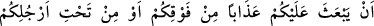
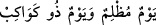

MÜŞRİKLERİN AZABLARLA
UYARILMALARI
63. De ki: Karanın ve denizin karanlıklarından (tehlikelerinden) sizi kim kurtarır
ki? (O zaman) O’na gizli gizli yalvararak “Eğer bizi bundan kurtarırsan andolsun
şükredenlerden olacağız” diye dua edersiniz.
64. De ki: ondan ve bütün sıkıntılardan sizi Allah kurtarır. Sonra siz yine O’na
ortak koşarsınız.
65. De ki: “Allah’ın size üstünüzden (gökten) veya ayaklarınızın altından
(yerden) bir azap göndermeye ya da birbirinize düşürüp kiminize kiminizin hıncını
tattırmaya gücü yeter.” Bak, anlasınlar diye âyetlerimizi nasıl açıklıyoruz!
66. Kur’an hak olduğu halde kavmin onu yalanladı. De ki: Ben size vekil (kefil)
değilim.
67. Her haberin gerçekleşeceği bir zaman vardır. Yakında siz de gerçeği
bileceksiniz.
Ey Muhammed (a.s.), Mekkelilere “de ki: Sizi seferlerinizde “karanın ve denizin
karanlıklarının” korkularından ve çetinliklerinden “kim kurtarıyor” sizi bu durumda
kim muhafaza ediyor?
Âyette “karanlık” kelimesi, sıkıntı ve meşakkat anlamında kullanılmıştır. Çünkü hem
karanlık hem de çetinler insana korku verir, gözünü görmez eder. Nitekim zorluklarla
geçen bir günü anlatmak için
“__WORD__” yani karanlık gün ve yıldızlı gün, denir. Çünkü bir gece ayın
ışığı ile aydınlanmadığı vakit, irili ufaklı yıldızlar ortaya çıkar. Gecenin karanlığı
arttıkça yıldızlar daha çok belirir.
“Halbuki gizli ve açıktan: